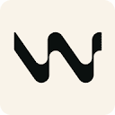

Killing
the handoff.
Iterating design live in the browser, on real production code.
- Speaker
- Paul Bakaus
- Format
- ~22 min, then Q&A
- Follow along
- impeccable.style
For twenty years, this was the chain. Five links, each one doing real work.
The handoff was the contract.
It was a delivery, yes. But it was also where the work got seen: where someone with taste looked at the thing and said "no, again." The handoff was the design org chart.
A cycle that used to take weeks
now takes hours.
Product teams ship
10x faster.
The handoff doesn't fit inside a one-day cycle, never mind a one-hour one. So teams quietly stopped doing it.
Most links snapped quietly. Dev plus AI ships directly to production. No one with taste in between.
Designers stayed on the canvas.
Devs moved into the running app.
The work used to flow from one to the other. Now they live in different rooms, and the bridge between them is gone.
Figma. Miro. Mocks of the thing.
Real components. Real responsive behavior. The actual ship.
Without a replacement
for critique, quality
silently degrades.
It isn't dramatic. Nothing crashes. You just open a build six months later and notice it looks like every other one.
You probably
think of this.
Purple-to-cyan gradients. Glassmorphism. Six emoji and a manifesto. You knew it on sight.
It just wears
a suit.
Crisp grid. One accent button. Tasteful neutrals. Inter 600. Stripe-flavored. Looks fine. Looks familiar. Looks like every other one.
Devs are drowning
in slop too.
Coding agents ship sloppy code the same way they ship sloppy design: duplicated logic, dead abstractions, quiet tech debt. Engineering noticed early. And engineering did something about it.
Engineering filled its toolbench.
Design's stayed empty.
A good designer
never says
"make it nicer."
With no designer in the loop, that's the prompt well-meaning engineers reach for. The model shrugs back the page you saw earlier. Good direction is vocabulary: constraints, references, a point of view. That is the input the agent has been missing.
You can't make a model
better at design.
The obvious next idea: just teach the model design. We tried. Skills can't teach taste; it doesn't move the needle. But two things skills can do, together, get you most of the way:
Catch the slop the model can't see in itself. The defaults it would always reach for, gone.
The 40 patterns we just sawGive designers the words to steer it. Bolder. Quieter. Distill. Polish. Critique.
What that looks like, next slideThe model isn't suddenly a designer. It's just no longer the default voice in the room, and the designer is back at the wheel.
Same brief. Five adjectives. Five outcomes.
the thing.
to ship.
to ship.
If you've never used
an AI coding tool: here's the shape.
Cursor. Claude Code. Codex. A code editor with an AI you talk to in plain English.
Impeccable is one. Installing it adds design vocabulary to the agent. Takes 30 seconds.
Type a command in chat. The agent reads the skill, applies the change to your real code, shows the result.
You don't have to write code. The vocabulary is yours. The agent is the brush.
Impeccable
A rule engine that catches the slop, and 23 adjective commands that give designers the wheel. Two halves of one open-source skill. Runs in twelve AI coding tools.
Twenty-three adjective commands.
Two registers. One discipline.
Brand vs ProductAlready running a design system? Setup reads it before touching anything: your tokens, your DESIGN.md, your component idioms. /extract reverse-engineers one from the UI you already have. The commands steer inside your system, not around it.
Runs inside twelve AI coding tools.

while they run.
while they run.
No canvas. No handoff. No translation.
Demo
Three passes on the 2026 slop page.
The agent reviews the rendered page and calls out its own slop, rule by rule. Receipts on the next slide.
The small-change case: grab one element in the running app, drag the parameters, accept. No prompt ping-pong, no Figma.
The always-on slop tripwire on any URL. The agent's last line of defense against itself.
What /impeccable critique said.
The 2026 slop page, recovered.
Inter 600. Tasteful neutrals. One accent button. Six other sites already look like this.
Same brief. Same content. Three commands. A page that looks like itself instead of every other one.
The detector that flagged the page on slide 12 finds nothing to flag now.
Dev plus AI still ships straight to production. But someone with taste sits in between again. The break, repaired in gold.
Killing the handoff
doesn't mean killing
the critique.
It means putting it inside the same loop that ships the code.
Three commands. Ten minutes.
npx impeccable skills install
Adds /impeccable to Claude Code, Cursor, Codex, and nine more.
/impeccable critique
Point it at the page you're least proud of. See the receipts.
/impeccable live
Real responsive behavior. Real components. No round-trip.
Questions?
Especially the ones that start with "but what about" or "I don't buy that". Those are the ones I want.
Thank you.
- Try it
- impeccable.style
- Source
- github.com / pbakaus / impeccable
- Reach me
- paul@renaissance-geek.ai